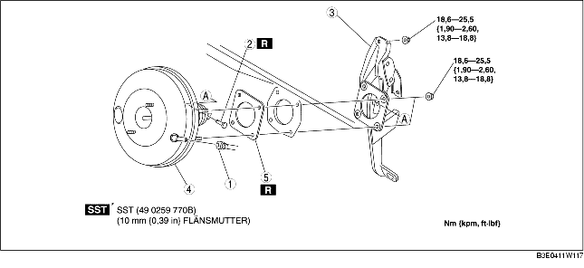

1. Utför följande procedur och flytta kylslangen (LÅG) till läget enligt bilden. (ZJ, Z6)
2. Utför följande procedur och flytta kylslangen (LÅG) under bilen. (LF)
3. Demontera huvudcylindern. (Se DEMONTERING/MONTERING AV HUVUDCYLINDER.)
4. Demontera bromskontakten.
5. Demontera gaspedalen. (Se DEMONTERING/MONTERING AV BROMSPEDALEN.)
6. Demontera i den ordning som anges i tabellen.
7. Montera i omvänd ordning mot demonteringen.
8. Kontrollera bromspedalen efter monteringen. (Se KONTROLL AV BROMSPEDAL.)
9. Justera gasvajern. (Se KONTROLL/JUSTERING AV GASVAJERN [ZJ, Z6].) (Se KONTROLL/JUSTERING AV GASVAJERN [LF].)

.
1. Demontera bromspedalens fästmuttrar.
2. Flytta servobromsenheten mot fordonets bakre del.
3. Demontera bromspedalen.